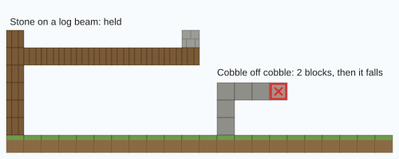
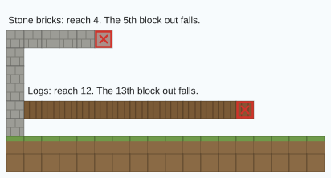
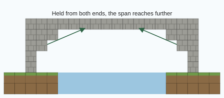
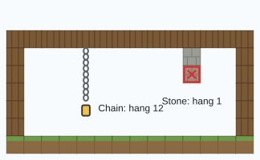
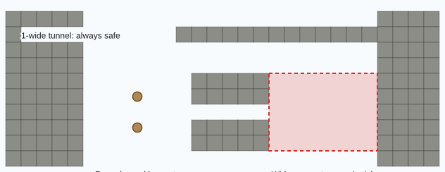

Gravity & building
LiveAnything you build has to hold itself up. Timber carries loads a long way, stone barely overhangs at all, and a badly planned roof comes down.
In Settlers III, blocks you place need support. Every placed block has to trace a path back through solid material to the natural ground. If it can't, it cracks, creaks, and after a two-second warning falls.
A stone castle is a serious achievement here. The stone is heavy to haul from the quarry, and without well-planned supports it won't stay up.
The rules
- Straight up is free. A column or wall can be any height as long as it stands on something.
- Sideways costs. Each block of overhang uses up some of the carrying block's reach. When it runs out, the next block falls.
- Diagonally down works too. Stepping each course out a little (corbelling) is a real technique.
- Hanging below is hard. Blocks hanging under a support depend on its hang strength. Stone can barely hang anything; chains and iron can.
- Spans supported at both ends go further. Arches and bridges work because each half helps hold up the middle.
- The block doing the carrying decides. A stone block on the end of a long oak beam is fine, because the beam still has reach to spare. A stone shelf sticking out of a stone wall runs out after a couple of blocks.

These support rules apply to blocks players have placed. Natural hills, cliffs and caves stay put, but mines you dig can cave in.
Material strengths
| Class | Blocks | Reach | Hang |
|---|---|---|---|
| Timber | Logs and wood, wooden fences and fence gates, bamboo blocks | 12 | 1 |
| Planks | Planks, wooden stairs, slabs and trapdoors: sawn timber, weaker than logs | 8 | 1 |
| Prop | Scaffolding | 19 | 10 |
| Metal | Iron, gold, diamond, emerald, lapis and copper blocks; chains; iron bars | 19 | 12 |
| Reinforced | Obsidian, netherite blocks, reinforced deepslate | 29 | 15 |
| Lattice | Stone walls, ladders, nether brick fences | 7 | 0 |
| Masonry | Bricks, polished and smooth stone, sandstone, terracotta, concrete, quartz, deepslate tiles | 4 | 1 |
| Weak masonry | Cracked, mossy and chiselled variants | 2 | 0 |
| Stone | Stone, deepslate, basalt, ores, most other solid blocks | 2 | 1 |
| Rough stone | Cobblestone, andesite, diorite, granite, tuff, blackstone | 2 | 0 |
| Glass | All glass | 2 | 0 |
| Soft | Wool, carpets, leaves, hay, moss | 1 | 2 |
| Soil | Dirt, grass, mud, clay, farmland, snow blocks | 0 | 0 |
Reach is roughly how many blocks sideways a material can carry a load. Hang is how far below itself it can hold something up.

Whole timber (logs, fences and fence gates) carries a load 12 blocks. Sawn timber (planks, stairs, slabs) only carries it 8. Use logs and fences for beams and posts, and planks for floors and walls between them.
Building techniques that work
Timber frames
Logs and wooden fences have by far the best reach of any common material. A frame of log posts and log beams can carry a plank or stone infill, or a stone floor on top, because the beams do the carrying. Fences are as strong as logs, so they make good slim posts and railings. Most practical buildings will be timber-framed.
Arches and bridges
A span supported from both ends gets extra strength, so arches, vaults and bridges are possible even in masonry. Build from both sides and meet in the middle.

Props
Scaffolding is the prop: cheap, strong, and clearly a support. Use it to hold things up while you build, or leave it in place as permanent shoring.
Hanging things
To hang a lantern, a chandelier or a floor from above, use chains or iron. They're the only common blocks with real hanging strength.

Rafts, docks and jetties
Timber floats, logs and planks alike. Water supports timber for a short distance, so wooden jetties, rafts and pontoons work. Stone gets no help from water: you can't found a keep on a lake.
Collapses
- Before anything falls you'll see cracks spread across it and hear creaking. You have about 2 seconds to get clear.
- Everything that's lost support falls together.
- Falling blocks hurt whatever they land on.
- Blocks break as they land: stone becomes cobblestone, cobblestone becomes gravel, stone bricks crack, grass and dirt become coarse dirt, and glass shatters completely. Timber survives the fall intact.
Stone brick near water slowly turns mossy and cracked over time (see The living world), and weathered masonry is weaker than fresh. An old building nobody maintains can eventually come down by itself. Oxidised copper is also weaker than fresh copper.
Cave-ins
Mines you dig into natural rock can collapse. Caves and halls that were already there when the world was made are stable; only the spaces players open are judged. Cave-ins are live on the full Caeldun map.
- Width is what matters. A tunnel 1 block wide is always safe, however tall, and so is a crossing of two of them. The wider the open span of roof you dig out, the riskier each further block you mine.
- Height makes wide rooms worse. Up to 3 blocks of headroom is free; beyond that, a wide room gets steadily riskier.
- Soil roofs are weaker. A roof of dirt, clay or mud is twice as likely to fall as rock.
- Shallow digs are safe. Roofs with less than 4 blocks of cover above them aren't judged.
- You're told the risk in chat as you dig.

Posts
Brace the roof with posts: a column of wooden fence, logs or scaffolding standing on the floor and pressed right up against the rock roof. A post braces the roof within about 4 blocks of it (posts every 8 blocks cover a tunnel). Planks don't count, and a post that stops short of the roof holds nothing.
| Roof | Risk | What falls |
|---|---|---|
| Braced by a post | A tenth of normal | At most a stone or three |
| No post nearby | Up to double | Usually a few stones, but sometimes a real collapse of up to 24 blocks |
Falling rock does 3 damage per block to anyone underneath. You get a crack-and-creak warning first: 1.5 seconds for a small fall, 3 seconds for a big one. Jamming a post in during the warning still saves it.
Protected land
Collapses respect protected regions and claims. They won't tear through land you aren't allowed to build in.